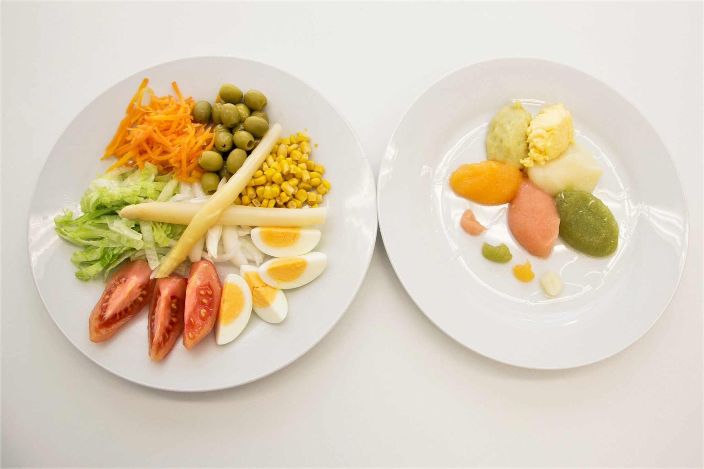

Tos o atragantamientos
Especialmente al beber, comer ciertas texturas o tomar medicación.
Logopedia especializada en disfagia
Evaluación, tratamiento y acompañamiento para personas con dificultades de deglución y sus familias en Gran Canaria.

Sobre mí
Comer con Gusto nace de una idea sencilla: cada persona con disfagia necesita una valoración rigurosa, cercana y adaptada a su realidad, no una solución genérica.
Soy Rebeca Ramos Carballo, logopeda especializada en deglución. Acompaño a pacientes y familias para mejorar la seguridad en las comidas, reducir miedos y recuperar rutinas posibles.
El objetivo no es solo tragar mejor. Es volver a sentarse a la mesa con confianza.
Disfagia
La disfagia es una alteración de la deglución que puede dificultar tragar alimentos, líquidos o saliva de forma segura.
Puede aparecer en personas mayores, pacientes neurológicos, tras determinadas enfermedades o durante procesos de recuperación.
Especialmente al beber, comer ciertas texturas o tomar medicación.
La aspiración puede aumentar el riesgo de complicaciones respiratorias.
Comer menos por miedo o cansancio también necesita atención.
Servicios
Valoración clínica y funcional para entender qué ocurre y qué necesita cada caso.
Recomendaciones para comer y beber de forma más segura sin perder apetito.
Trabajo de musculatura orofacial y estrategias de deglución según objetivos.
Pautas claras para cuidadores, familiares y entorno cercano del paciente.
Cómo trabajo
Revisamos síntomas, antecedentes, rutinas y dificultades reales en las comidas.
Definimos objetivos, estrategias, ejercicios y recomendaciones concretas.
Ajustamos el tratamiento para que sea sostenible en casa y en el día a día.
Contacto
Si necesitas orientación o quieres concertar una cita, puedes contactar directamente por teléfono, correo o WhatsApp.